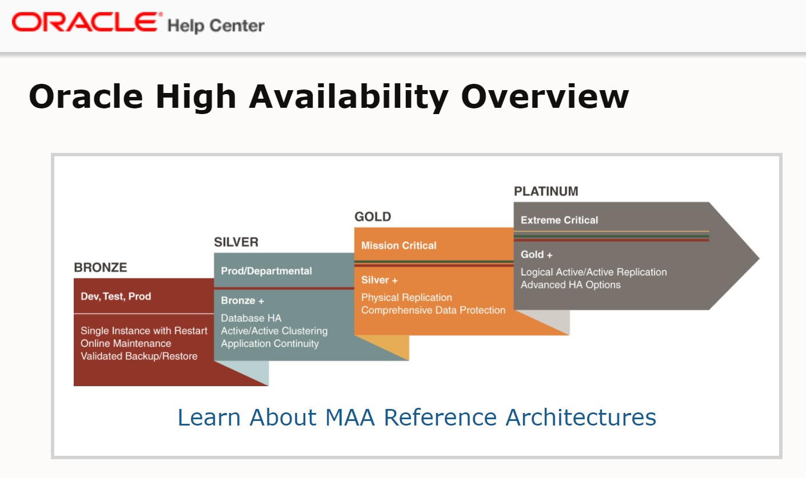

This was first published on https://www.dbi-services.com/blog/oracle-maa-reference-architecture-and-ha-dr-rto-rpo/ (2020-09-26)
Republishing here for new followers. The content is related to the versions available at the publication date.
.
I may have mentioned in some previous blog post that, in my opinion, the names of Oracle Database features make sense on the vendor product management context more than in a user context. I’m not saying that it is good or bad. There are so many features, that can be combined, and that evolved for many years. The possible use cases is unlimited. What I see customers doing in Europe is very different from what I have seen in US companies or in Africa for example. What I’m saying is that most of the time you need a vendor-to-user dictionary when reading Oracle documentation and presentations. I’ll focus here on the MAA reference architecture. Yes, acronyms add to the complexity. MAA means Maximum Availability Architecture. Because when you have High Availability features for decades, you need another name when you bring an “higher” High Availability.

When I read the MAA Architecture reference, I see a categorization made from the products:
If you know Oracle for years, have seen the birth of RMAN in Oracle8 (or EBU before), of RAC in Oracle 9i (or OPS before), Data Guard in 9i (or Standby before), and the acquisition of GoldenGate (or used Streams CDC before) then those medals of availability probably ring a bell for you. But explaining that to new oracle users is difficult.
If we quit the product point of view and talk about user experience, here is what matters: how to recover from a server, storage, or datacenter failure with the shortest downtime (RTO – Recovery Time Objective) and the minimal data loss (RPO – Recovery Point Objective). You know what I mean here. “Server failure” is when the instance crashes, or the motherboard burns. You need to restart without compromising the Atomicity and Consistency in ACID. “Storage failure” is when data stored on disk is damaged (block corruption, file dropped, disk lost). You need to restore without compromising the Durability in ACID. This is about the database “Availability” after some infrastructure components failed. This happens rarely, but it definitely happens. You must design your infrastructure to cope with those failures in and accepted RTO/RPO. “Datacenter failure” is when there’s a full power outage, or all network cables cut by a mechanical shovel, or the data center burns or is underwater, or a plane crashed on it… This may never happen but in the low probability where it happens, you need to get the data and the database back. On one hand, you have time for this because everyone knows it is exceptional. But on the other hand, you will have so much work to do on all infrastructure that you better have the database recovery automated without stress.
🥉 The MAA Bronze provides the following:
🥈 The MAA Silver provides, in addition to Bronze, a service protection:
🥇 The MAA Gold brings data protection with physical replication:
🏆 MAA Platinum is based on Gold for database availability but adds features for application availability:
What also matters is the price (of the option and the processors for the additional nodes):
While there, some awesome features like application continuity which bring the database high availability to the application without any code change are available with the RAC or ADG options only.
Probably the most important is the increase of complexity:
The complexity is the most important but also probably the most overlooked. More complexity increases the cost of ownership. This can be reduced when correctly bundled in engineered systems (Oracle Database Appliance) or managed services (but remember that Oracle allows RAC only on their Cloud). And more complexity may also be a source of unplanned outages: the more components the more failure. By this I mean: use RAC when you need to (like RTO=0 being a critical requirement on planned and unplanned outages) and then consider that it has a cost to operate this complexity correctly. And that’s perfect. But if you want to keep it simple and accept an RTO in a few minutes, Data Guard is probably sufficient.
Here are the most common Oracle Database configuration I see in our customers in Switzerland:
Given that servers can have a lot of cores, the need to load-balance in a cluster is very rare, despite all the “scale-out” trend. RAC (or RAC One Node) is good to reduce planned downtimes because you can relocate the services before a maintenance on one server. But may bring more unplanned outage because of additional complexity. An unplanned outage can be handled by Data Guard which protects for disk corruption in addition to the availability of the services. So where is RAC still useful? Consolidation is one case. You build and maintain a cluster and you can balance the load by opening singleton services on the pool of servers. But today, with multitenant and online relocation (or refreshable clone switchover) you may do the same without a cluster.
Of course, if one minute of downtime is not possible at all, then RAC is a must and this justifies the additional complexity. And with it, you reduce the downtime to zero if you properly configured application continuity.
Historically, Real Application Cluster (RAC) was for High Availability (HA) and Data Guard (DG) was for Disaster Recovery (DR) and they still keep those tags in Oracle documentation and marketing slides. RAC is a cluster technology that keeps the database service available even if a node fails. Physical Standby is log shipping technology which maintains a standby on another site in case of data center loss, with small data loss. But things change… Today you can have the standby in SYNC which means no data loss (RPO=0). And then it can be considered as HA. And the failover can be automated (FSFO – Fast Start Failover with an Observer) which means that the service is available within minutes (acceptable RTO). FSFO and SYNC are the keys here. Because if you need a manual action, the RTO will be in hours, especially if the failure happens during the night. And if you are not in SYNC you need a human decision to choose between immediate availability or no data loss.
Today, in the user’s mind HA vs. DR is about SYNC or ASYNC. For example, in AWS things are simple: synchronisation across Availability Zones within the same region is HA: small distance, low latency but protects for a data center failure. And replication to another region is DR: you are protected from earthquake or failure that brings down all AZs but with eventual consistency where some transactions did not ship in time.
Talking about AWS, the definitions are easy for HA/DR but when it comes to Reliability, Fault Tolerance, High Availability the difference is subtle:
High Availability:
Withstand some measures of degradation, have minimal downtime and minimal human intervention
-> fault tolerance (built-in redudancy), recoverability (restore quickly) and scalability contributes to HA— Franck Pachot (@FranckPachot) June 26, 2020
In the Oracle Cloud you can create a Data Guard configuration within an Availability Domain (hopefully in different Fault Domains) or another region. This is for the DBaaS (PaaS provisioning). For the managed one, the Autonomous Database, it running in RAC (to allow rolling patching, keeping latest patch level without outage) but – as far as I know – not protected by Data Guard. The “Autonomous Data Guard” is borrowing the name but is actually a refreshable clone (see https://www.dbi-services.com/blog/a-serverless-standby-database-called-oracle-autonomous-data-guard). In cloud a database is a service. High Availability covers data in addition to the instance and this means database replication. RAC is not sufficient for HA there.
When talking to users, they often consider the standby database as a “read replica”. And that’s right. It is synchronized with physical replication. However, Oracle reserves the “replication” term for logical replication – Golden Gate. Again, like the silver/bronze/gold/platinum, the names are determined by the product rather than the use case. I like to focus on the user’s point of view. If you want to protect your database, the best you can do is a physical standby. It is an exact replica. Physically the same as the primary: you can expect the same behavior in functionality and performance when you failover to it. You can even take a datafile from it to restore to the primary. It is like a backup that is already restored pro-actively. This is Dbvisit Standby in Standard Edition or Data Guard in Enterprise Edition. In both, you can open it as a “read replica” for a daily copy, and re-synchronize during the night. With Active Data Guard you can get this “read replica” synchronized for real-time reporting. All this with very little complexity: it uses the basic recovery mechanisms (duplicate for standby or restore from service, log shipping and redo apply) and simple automation (Dbvisit console for SE, Data Guard Broker for EE). It allows fault tolerance at all layers with quite fast recoverability. This is a huge increase in availability with very little complexity. In some cases, you may need RAC but that is probably for other reasons than simple HA. In some cases, you may need Golden Gate, but that is probably for other reasons as well. When you failover to a logical copy, rather than a physical replica, you have the same issue as when importing a dump rather than a database backup: physical layout of data is different, execution plans can be different, performance can be different.
The MAA reference architecture with their metal tiers probably makes sense for people used to the US Health Insurance contracts. You basically decide the level of protection based on your revenue and take the package that has been build for your “level”. I prefer to look at the requirements and build the most simple solution that fit the needs and this is why I’ve put a few alternative definitions here. And remember, none of the HA solutions are valid unless you properly tested them.